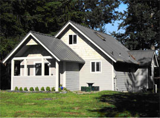
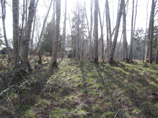
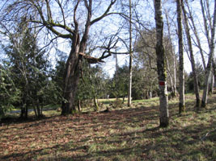
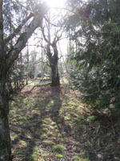

11/10/09
FOR LEASE – RENT
LUXURIOUS 2 BEDROOM – 1 BATH – PRIVATE ISLAND HOME - $1200 mo.
AVAILABLE JANUARY 1, 2010
The property has a 1/2 acre fenced and gated yard for pets and children.
The house has a fully automated propane central heating system and air conditioning.
All new plumbing and electrical systems, energy efficient thermal windows & doors, a new custom kitchen and bath, exotic hardwood floors, marble tiled bath, spacious built in closets and laundry, and a private deck with water and ferry view below.
Second level loft can be a spacious second bedroom, accessible by a large central spiral staircase.
Bonus package: Satellite linked for high speed Internet and T.V.
Partially furnished with appliances, washer/dryer, dishwasher, frig./freezer, stove.
Heat, utilities, satellite internet, satellite t.v & phone by tenant.
Security and Pet Deposits Required - $500 each
Private showings must be arranged, as access to the island is restricted to property owners and authorized guests. No access permitted without a signed guest pass by the owners.

For more info call Peter at 360-509-2625
Email: peter.rucks10@gmail.com
11/9/09
BIG AUTUMN SALE – SUNDAY 11/15 – 9AM – 3 PM
1201 East Madrona Blvd. – Herron Island
WE’RE PUTTING A LARGE ASSORTMENT OF QUALITY STUFF ON THE TABLE – 1 DAY ONLY!
Construction tools & materials: NIKOTA 3500 watt generator, 4 Gal. 2 tank HD compressor, hose & fittings, PORTER CABLE framing & finish nailing guns, DELTA drill press, PEX Tool and supplies, bamboo stair treads, and more assorted stuff.
Garden Tools and supplies: 5 hp TORO lawnmower - mulching / bagging f.w. drive, TORO electric leaf blower, HOMELITE yard trimmer, fencing and posts, 2 – 8’ Magnolia trees (no pots), lawn & deck furniture, fishing pole & reel, assorted garden tools, and more.
Interior Stuff: large L-shaped desk w. keyboard & file drawers & shelves, 2 drawer lateral file, 2 IKEA book shelves, LAZ-E Boy Burgundy recliner, storage baskets, assorted area rugs, etc., etc., etc.
Too much to list, so don’t wait…and definitely don’t come late!
For more info call Peter at 360-509-2625..email: peter.rucks10@gmail.com...anytime
10/1/09
FOR SALE - 28 hp Johnson outboard motor. runs great, very dependable. Asking $350 obo. Call Linda or Lonnie at 360-825-7519 or cell 253-569-1612. Can see at 1013 West Herron Blvd @ "Kelly's Kove" on island.
9/19/09
Nordic Inflatable Boat - 10.5 feet long with two seats and oars $500 Call Don Greinke at 253-857-5463
9/07/09
"For Sale" Napoleon wood stove, 24 carat gold trim. Excellent condition. $600 . Boat, 1989 Bayliner Capri, good shape. 1989 Force-motor, needs work: Make offer.(253-884-5565)
8/20/09
For Sale by Owner -- 614 Yew Blvd. Herron Island, WA


$162,500. For more information, please visit our website: http://www.wonderments.com/614YewBlvd/IslandHomeForSale.htm. Call the owners at --- (253) 884-0560 or email to - carolynsnyder@centurytel.net.
8/01/09
Black Iron Great Northern Wood Stove. Top 13x20. Height 22in
$50. Call Pat - 206-853-4023
7/23/09
For sale 1988 14' Smokercraft Alaskan aluminum boat with a 9.9 HP Johnson outboard. Features include bottom paint (2008), oars and a trailer. Motor just serviced in June with new water pump impeller and thermostat and tune up. Trailer ok but not suitable for long distance without some work. Asking $1700.00 OBO Allen Moren (253/884-2721) see in the water at 721 East Herron blvd. Both licensed til 2010.
7/17/09
Seeking rental house on herron island for three adults for Labor Day weekend (Sept 4, 5, 6 and 7). Please contact Doug Fisher 808-284-2894
2/26/09
404 West Yew Property for sale $49,500
360-509-0183
  